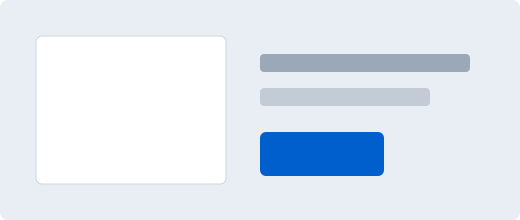

Checkout review
Confirm your plan
This fixture mimics a UXPin design handoff where coded components render into real HTML.

Continue checkoutThis fixture mimics a UXPin design handoff where coded components render into real HTML.

Continue checkout